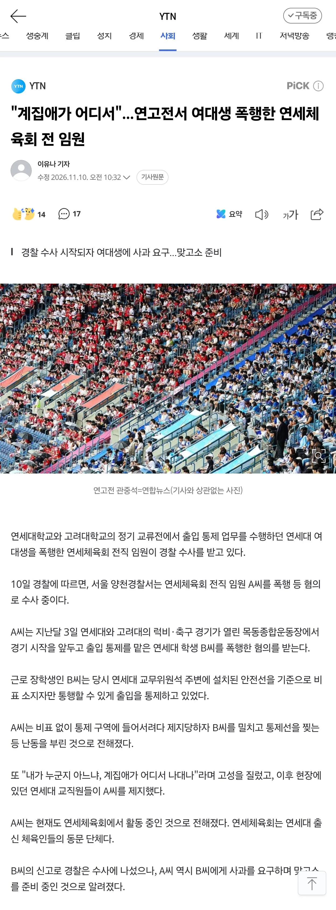

딸 뻘한테 계집은 곱게 늙어야지

딸 뻘한테 계집은 곱게 늙어야지
다들 자길 몰라주니까 누군지 아냐고 물어봐야함 ㅋㅋㅋ
어디선가 내세울게 뭐밖에 없는 사람들이 그런 행동 자주한다고 본 것 같음
그 나이에 연고전 보게해주는것만으로도 감사해야지 학교망신 제대로 시켰네
제목 고연전인거 보니 고대개붕이구나
나 고졸인데
어쨋든 같은 고씨네
고졸동
연세대에서 사고 쳤으니 고연전이라 적었겠지
ㅈ도 아닌게 자아만 존나 비대함
니가 누군데요 씹새야 ㅋㅋ
나를 모르느냐
견오전으로 하자 ㅋㅋ
연세대 동문에서 저 놈 바로 제명하고 대학에서 피해자 위해 빠르게 일처리해주지 않는 한 계속 고연전으로 불러야지 연고가 입에 더 잘 붙어서 연고전이라 했었지만
연세스럽네
맞고소라니ㅋ
시펄 뚝스딱스하고싶네
체육회 임원 ㅋㅋㅋㅋ
좆도 아닌 완장 차면 저렇게 되는것도 정신병같아
왜 좆도 아닌 녀석들은 꼭 내가 누군지 아느냐 이지랄을 할까